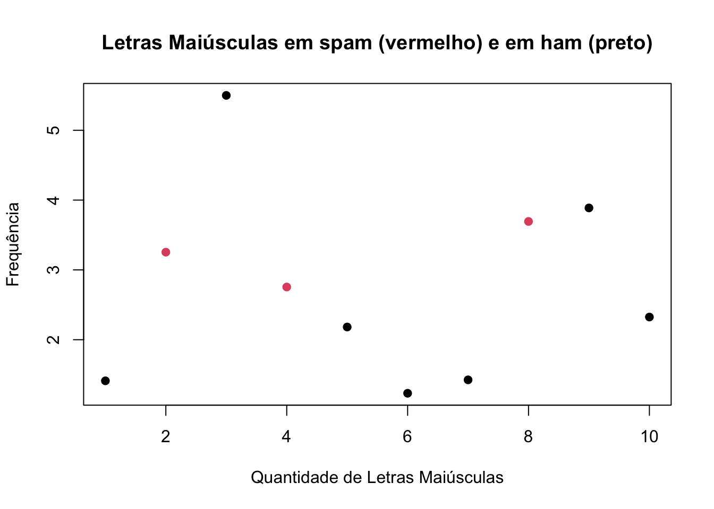
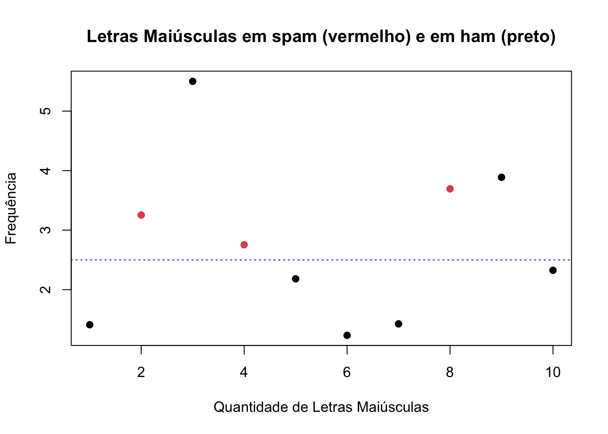

Este é um dos conceitos mais fundamentais com os quais lidamos na aprendizagem de máquina e previsão. Temos duas taxas de erros amostrais: o erro dentro da amostra (in sample error) e o erro fora da amostra (out of sample error).
Erro dentro da Amostra (In Sample Error)
É a taxa de erro que você recebe no mesmo conjunto de dados usado para criar seu preditor. Na literatura às vezes é chamado de erro de resubstituição. Em outras palavras, é quando seu algoritmo de previsão se ajusta ao que você coletou num conjunto de dados específico. E assim, quando você recebe um novo conjunto de dados, a precisão diminuirá.
Erro fora da Amostra (Out of Sample Error)
É a taxa de erro que você recebe em um novo conjunto de dados. Na literatura às vezes é chamado de erro de generalização. Uma vez que coletamos uma amostra de dados e construímos um modelo para ela, podemos querer testá-lo em uma nova amostra, por exemplo uma amostra coletada em um horário diferente ou em um local diferente. Daí podemos analisar o quão bem o algoritmo executará a predição nesse novo conjunto de dados.
Algumas ideias-chave
Quase sempre o erro fora da amostra é o que interessa.
Erro dentro da amostra é menor que o erro fora da amostra.
Um erro frequente é ajustar muito o algoritmo aos dados que temos. Em outras palavras, criar um modelo overfitting(*).
(*) Overfitting é um termo usado na estatística para descrever quando um modelo estatístico se ajusta muito bem a um conjunto de dados anteriormente observado e, como consequência, se mostra ineficaz para prever novos resultados.
Vejamos um exemplo de erro dentro da amostra vs erro fora da amostra:
set.seed(131)# Vamos selecionar as linhas da base de dados spam através de uma amostra de tamanho 10 das 4601 linhas# dos dados:spamMenor = spam[sample(dim(spam)[1], size =10), ]# Vamos criar um vetor composto pelos rótulos "1" e "2". # Se um e-mail da nossa amostra for spam, recebe "1", se não for spam, recebe "2".spamRotulos = (spamMenor$type =="spam")*1+1# Na nossa base a variável capitalAve representa a média de letras maiúsculas por linha.plot(spamMenor$capitalAve, col = spamRotulos, xlab ="Quantidade de Letras Maiúsculas",ylab ="Frequência", main ="Letras Maiúsculas em spam (vermelho) e em ham (preto)",pch =19)

Podemos notar que, em geral, as mensagens classificadas como spam possuem uma frequência maior de letras maiúsculas do que as mensagens classificadas como não spam. Com base nisso queremos construir um preditor, onde podemos classificar e-mails como spam se a frequência de letras maiúsculas for maior que uma determida constante, e não spam caso contrário.
Veja que se separarmos os dados pela frequência de letras maiúsculas maior que 2,5 e classificarmos o que está acima como spam e abaixo como não spam, ainda teríamos duas observações que não são spam acima da linha.
plot(spamMenor$capitalAve, col = spamRotulos, xlab ="Quantidade de Letras Maiúsculas",ylab ="Frequência", main ="Letras Maiúsculas em spam (vermelho) e em ham (preto)",pch =19)abline(h =2.5, lty =3, col ="blue")
Então o melhor para esse caso é criar o seguinte modelo:
letras maiúsculas > 2,5 e < 3,8 ⇒ spam;
letras maiúsculas < 2,5 ou > 3,8 ⇒ não spam.
plot(spamMenor$capitalAve, col = spamRotulos, xlab ="Quantidade de Letras Maiúsculas",ylab ="Frequência", main ="Letras Maiúsculas em spam (vermelho) e em ham (preto)",pch =19)abline(h =c(2.5, 3.8), lty =3, col ="blue")
Note que obtivemos uma precisão perfeita nessa amostra, como já era esperado. Nesse caso, o erro dentro da amostra é de 0%. Mas será que esse modelo é o mais eficiente em outros dados também?
Vamos usar essa segunda regra para criarmos um modelo mais geral:
letras maiúsculas > 2,5 ⇒ spam;
letras maiúsculas <= 2,5 ⇒ não spam.
plot(spamMenor$capitalAve, col = spamRotulos, xlab ="Quantidade de Letras Maiúsculas",ylab ="Frequência", main ="Letras Maiúsculas em spam (vermelho) e em ham (preto)",pch =19)abline(h =2.5, lty =3, col ="blue")

# construindo o modelo geralmodelo.geral =function(x){ predicao =rep(NA, length(x)) predicao[x>=2.5] ="spam" predicao[x<2.5] ="nonspam"return(predicao)}# avaliando o modelo geralresultado2 =modelo.geral(spamMenor$capitalAve)table(resultado2, spamMenor$type)
resultado2 nonspam spam
nonspam 5 0
spam 2 3
Observe que dessa forma temos um erro dentro da amostra de 20%. Vamos agora aplicar esses dois modelos para toda a base de dados:
Observe que utilizando o modelo sobreajustado obtivemos um erro fora da amostra de 40,77%, enquanto que com o modelo geral esse erro foi de 27,95%. Note que se queremos construir um modelo que melhor representa qualquer amostra que pegarmos, um modelo não sobreajustado possuirá uma precisão maior.